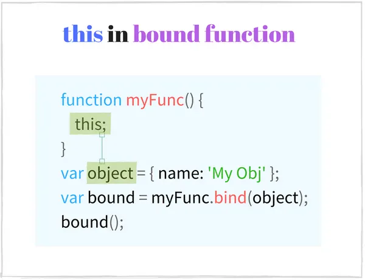

摘要： 神奇的this！
Fundebug经授权转载，版权归原作者所有。
很多时候, JS 中的 this 对于咱们的初学者很容易产生困惑不解。 this 的功能很强大，但需要一定付出才能慢慢理解它。
对Java、PHP或其他标准语言来看，this 表示类方法中当前对象的实例。大多数情况下，this 不能在方法之外使用，这样就比较不会造成混淆。
在J要中情况就有所不同: this表示函数的当前执行上下文，JS 中函数调用主要有以下几种方式：
alert('Hello World!')console.log('Hello World!')new RegExp('\\d')alert.call(undefined, 'Hello World!')每种调用类型以自己的方式定义上下文，所以就很容易产生混淆。
此外，严格模式也会影响执行上下文。
理解this关键是要清楚的知道函数调用及其如何影响上下文。
本文主要说明函数的调用方式及如何影响 this，并且说明执行上下文的常见陷阱。
在开始之前，先知道几个术语：
调用函数正在执行创建函数体的代码，或者只是调用函数。 例如，parseInt函数调用是parseInt（'15'）。
parseInt函数调用是parseInt('15')。this 在函数体内的值。 例如，map.set('key', 'value')的调用上下文是 map。当一个表达式为函数接着一个(，一些用逗号分隔的参数以及一个）时，函数调用被执行，例如parseInt('18')。
函数调用表达式不能是属性方式的调用，如 obj.myFunc()，这种是创建一个方法调用。再如 [1,5].join(',')不是函数调用，而是方法调用，这种区别需要记住哈，很重要滴。
函数调用的一个简单示例：
function hello(name) {
return 'Hello ' + name + '!';
}
// 函数调用
const message = hello('World');
console.log(message); // => 'Hello World!'hello('World')是函数调用: hello表达式等价于一个函数，跟在它后面的是一对括号以及'World'参数。
一个更高级的例子是IIFE(立即调用的函数表达式)
const message = (function(name) {
return 'Hello ' + name + '!';
})('World');
console.log(message) // => 'Hello World!'IIFE也是一个函数调用:第一对圆括号(function(name) {...})是一个表达式，它的计算结果是一个函数对象，后面跟着一对圆括号，圆括号的参数是“World”。
this 在函数调用中是一个全局对象
局对象由执行环境决定。在浏览器中，this是 window 对象。
在函数调用中，执行上下文是全局对象。
再来看看下面函数中的上下文又是什么鬼：
function sum(a, b) {
console.log(this === window); // => true
this.myNumber = 20; // 将'myNumber'属性添加到全局对象
return a + b;
}
// sum() is invoked as a function
// sum() 中的 `this` 是一个全局对象（window）
sum(15, 16); // => 31
window.myNumber; // => 20在调用sum(15,16)时，JS 自动将this设置为全局对象，在浏览器中该对象是window。
当this在任何函数作用域(最顶层作用域:全局执行上下文)之外使用，this 表示 window 对象
console.log(this === window); // => true
this.myString = 'Hello World!';
console.log(window.myString); // => 'Hello World!' <!-- In an html file -->
<script type="text/javascript">
console.log(this === window); // => true
</script>
this在严格模式下的函数调用中为 undefined
严格模式是在 ECMAScript 5.1中引入的，它提供了更好的安全性和更强的错误检查。
要启用严格模式，函数头部写入use strict 即可。
启用后，严格模式会影响执行上下文，this 在常规函数调用中值为undefined。 与上述情况2.1相反，执行上下文不再是全局对象。
严格模式函数调用示例：
function multiply(a, b) {
'use strict'; // 启用严格模式
console.log(this === undefined); // => true
return a * b;
}
multiply(2, 5); // => 10当multiply(2,5)作为函数调用时，this是undefined。
严格模式不仅在当前作用域中有效，在内部作用域中也是有效的(对于在内部声明的所有函数):
function execute() {
'use strict'; // 开启严格模式
function concat(str1, str2) {
// 严格模式仍然有效
console.log(this === undefined); // => true
return str1 + str2;
}
// concat() 在严格模式下作为函数调用
// this in concat() is undefined
concat('Hello', ' World!'); // => "Hello World!"
}
execute();'use strict'被插入到执行体的顶部，在其作用域内启用严格模式。 因为函数concat是在执行的作用域中声明的，所以它继承了严格模式。
单个JS文件可能包含严格和非严格模式。 因此，对于相同的调用类型，可以在单个脚本中具有不同的上下文行为：
function nonStrictSum(a, b) {
// 非严格模式
console.log(this === window); // => true
return a + b;
}
function strictSum(a, b) {
'use strict';
// 启用严格模式
console.log(this === undefined); // => true
return a + b;
}
nonStrictSum(5, 6); // => 11
strictSum(8, 12); // => 20this 在内部函数中的时候函数调用的一个常见陷阱是，认为this在内部函数中的情况与外部函数中的情况相同。
正确地说，内部函数的上下文只依赖于它的调用类型，而不依赖于外部函数的上下文。
要将 this 设置为所需的值，可以通过 .call()或.apply()修改内部函数的上下文或使用.bind()创建绑定函数。
下面的例子是计算两个数的和：
const numbers = {
numberA: 5,
numberB: 10,
sum: function() {
console.log(this === numbers); // => true
function calculate() {
console.log(this === numbers); // => false
return this.numberA + this.numberB;
}
return calculate();
}
};
numbers.sum(); // => NaN sum()是对象上的方法调用，所以sum中的上下文是numbers对象。calculate函数是在sum中定义的，你可能希望在calculate()中this也表示number对象。
calculate()是一个函数调用(不是方法调用)，它将this作为全局对象window(非严格模下)。即使外部函数sum将上下文作为number对象，它在calculate里面没有影响。
sum()的调用结果是NaN，不是预期的结果5 + 10 = 15，这都是因为没有正确调用calculate。
为了解决这个问题，calculate函数中上下文应该与 sum 中的一样，以便可以访问numberA和numberB属性。
一种解决方案是通过调用calculator.call(this)手动将calculate上下文更改为所需的上下文。
const numbers = {
numberA: 5,
numberB: 10,
sum: function() {
console.log(this === numbers); // => true
function calculate() {
console.log(this === numbers); // => true
return this.numberA + this.numberB;
}
// 使用 .call() 方法修改上下文
return calculate.call(this);
}
};
numbers.sum(); // => 15call(this)像往常一样执行calculate函数，但 call 会把上下文修改为指定为第一个参数的值。
现在this.numberA + this.numberB相当于numbers.numberA + numbers.numberB。 该函数返回预期结果5 + 10 = 15。
另一种就是使用箭头函数
const numbers = {
numberA: 5,
numberB: 10,
sum: function() {
console.log(this === numbers); // => true
const calculate = () => {
console.log(this === numbers); // => true
return this.numberA + this.numberB;
}
return calculate();
}
};
numbers.sum(); // => 15方法是存储在对象属性中的函数。例如
const myObject = {
// helloFunction 是一个方法
helloFunction: function() {
return 'Hello World!';
}
};
const message = myObject.helloFunction();helloFunction是myObject的一个方法，要调用该方法，可以这样子调用 :myObject.helloFunction。
当一个表达式以属性访问的形式执行时，执行的是方法调用，它相当于以个函数接着(，一组用逗号分隔的参数以及)。
利用前面的例子，myObject.helloFunction()是对象myObject上的一个helloFunction的方法调用。[1, 2].join(',') 或/\s/.test('beautiful world')也被认为是方法调用。
区分函数调用和方法调用非常重要，因为它们是不同的类型。主要区别在于方法调用需要一个属性访问器形式来调用函数(obj.myFunc()或obj['myFunc']())，而函数调用不需要(myFunc())。
['Hello', 'World'].join(', '); // 方法调用
({ ten: function() { return 10; } }).ten(); // 方法调用
const obj = {};
obj.myFunction = function() {
return new Date().toString();
};
obj.myFunction(); // 方法调用
const otherFunction = obj.myFunction;
otherFunction(); // 函数调用
parseFloat('16.60'); // 函数调用
isNaN(0); // 函数调用理解函数调用和方法调用之间的区别有助于正确识别上下文。
在方法调用中，
this是拥有这个方法的对象
当调用对象上的方法时，this就变成了对象本身。
创建一个对象，该对象有一个递增数字的方法
const calc = {
num: 0,
increment: function() {
console.log(this === calc); // => true
this.num += 1;
return this.num;
}
};
// method invocation. this is calc
calc.increment(); // => 1
calc.increment(); // => 2调用calc.increment()使increment函数的上下文成为calc对象。所以使用this.num来增加num属性是有效的。
再来看看另一个例子。JS对象从原型继承一个方法，当在对象上调用继承的方法时，调用的上下文仍然是对象本身
const myDog = Object.create({
sayName: function() {
console.log(this === myDog); // => true
return this.name;
}
});
myDog.name = 'Milo';
// 方法调用 this 指向 myDog
myDog.sayName(); // => 'Milo'Object.create()创建一个新对象myDog，并根据第一个参数设置其原型。myDog对象继承sayName方法。
执行myDog. sayname()时，myDog是调用的上下文。
在EC6 class 语法中，方法调用上下文也是实例本身
class Planet {
constructor(name) {
this.name = name;
}
getName() {
console.log(this === earth); // => true
return this.name;
}
}
var earth = new Planet('Earth');
// method invocation. the context is earth
earth.getName(); // => 'Earth'方法可以从对象中提取到一个单独的变量const alone = myObj.myMethod。当方法单独调用时，与原始对象alone()分离，你可能认为当前的this就是定义方法的对象myObject。
如果方法在没有对象的情况下调用，那么函数调用就会发生，此时的this指向全局对象window严格模式下是undefined。
下面的示例定义了Animal构造函数并创建了它的一个实例:myCat。然后setTimout()在1秒后打印myCat对象信息
function Animal(type, legs) {
this.type = type;
this.legs = legs;
this.logInfo = function() {
console.log(this === myCat); // => false
console.log('The ' + this.type + ' has ' + this.legs + ' legs');
}
}
const myCat = new Animal('Cat', 4);
// The undefined has undefined legs
setTimeout(myCat.logInfo, 1000);你可能认为setTimout调用myCat.loginfo()时，它应该打印关于myCat对象的信息。
不幸的是，方法在作为参数传递时与对象是分离，setTimout(myCat.logInfo)以下情况是等效的：
setTimout(myCat.logInfo);
// 等价于
const extractedLogInfo = myCat.logInfo;
setTimout(extractedLogInfo);将分离的logInfo作为函数调用时，this是全局 window,所以对象信息没有正确地打印。
函数可以使用.bind()方法与对象绑定,就可以解决 this 指向的问题。
function Animal(type, legs) {
this.type = type;
this.legs = legs;
this.logInfo = function() {
console.log(this === myCat); // => true
console.log('The ' + this.type + ' has ' + this.legs + ' legs');
};
}
const myCat = new Animal('Cat', 4);
// logs "The Cat has 4 legs"
setTimeout(myCat.logInfo.bind(myCat), 1000);myCat.logInfo.bind(myCat)返回一个新函数，它的执行方式与logInfo完全相同，但是此时的 this 指向 myCat，即使在函数调用中也是如此。
另一种解决方案是将logInfo()方法定义为一个箭头函数：
function Animal(type, legs) {
this.type = type;
this.legs = legs;
this.logInfo = () => {
console.log(this === myCat); // => true
console.log('The ' + this.type + ' has ' + this.legs + ' legs');
};
}
const myCat = new Animal('Cat', 4);
// logs "The Cat has 4 legs"
setTimeout(myCat.logInfo, 1000);当new关键词紧接着函数对象,(,一组逗号分隔的参数以及)时被调用，执行的是构造函数调用如new RegExp('\\d')。
声明了一个Country函数，并且将它作为一个构造函数调用：
function Country(name, traveled) {
this.name = name ? name : 'United Kingdom';
this.traveled = Boolean(traveled);
}
Country.prototype.travel = function() {
this.traveled = true;
};
// 构造函数调用
const france = new Country('France', false);
// 构造函数调用
const unitedKingdom = new Country;
france.travel(); // Travel to Francenew Country('France', false)是Country函数的构造函数调用。它的执行结果是一个name属性为'France'的新的对象。 如果这个构造函数调用时不需要参数，那么括号可以省略：new Country。
从ES6开始，JS 允许用class关键词来定义构造函数
class City {
constructor(name, traveled) {
this.name = name;
this.traveled = false;
}
travel() {
this.traveled = true;
}
}
// Constructor invocation
const paris = new City('Paris', false);
paris.travel();new City('Paris')是构造函数调用。这个对象的初始化由这个类中一个特殊的方法constructor来处理。其中，this指向新创建的对象。
构造函数创建了一个新的空的对象，它从构造函数的原型继承了属性。构造函数的作用就是去初始化这个对象。 可能你已经知道了，在这种类型的调用中，上下文指向新创建的实例。
当属性访问myObject.myFunction前面有一个new关键词时，JS会执行构造函数调用而不是原来的方法调用。
例如new myObject.myFunction()：它相当于先用属性访问把方法提取出来extractedFunction = myObject.myFunction，然后利用把它作为构造函数创建一个新的对象： new extractedFunction()。
在构造函数调用中 this 指向新创建的对象
构造函数调用的上下文是新创建的对象。它利用构造函数的参数初始化新的对象，设定属性的初始值，添加事件处理函数等等。
来看看下面示例中的上下文
function Foo () {
console.log(this instanceof Foo); // => true
this.property = 'Default Value';
}
// Constructor invocation
const fooInstance = new Foo();
fooInstance.property; // => 'Default Value'new Foo() 正在进行构造函数调用，其中上下文是fooInstance。 在Foo内部初始化对象：this.property被赋值为默认值。
同样的情况在用class语法（从ES6起）时也会发生，唯一的区别是初始化在constructor方法中进行:
class Bar {
constructor() {
console.log(this instanceof Bar); // => true
this.property = 'Default Value';
}
}
// Constructor invocation
const barInstance = new Bar();
barInstance.property; // => 'Default Value'有些JS函数不是只在作为构造函数调用的时候才创建新的对象，作为函数调用时也会，例如RegExp：
var reg1 = new RegExp('\\w+');
var reg2 = RegExp('\\w+');
reg1 instanceof RegExp; // => true
reg2 instanceof RegExp; // => true
reg1.source === reg2.source; // => true
当执行的 new RegExp('\\w+')和RegExp('\\w+')时，JS 会创建等价的正则表达式对象。
使用函数调用来创建对象存在一个潜在的问题(不包括工厂模式)，因为一些构造函数可能会忽略在缺少new关键字时初始化对象的逻辑。
下面的例子说明了这个问题：
function Vehicle(type, wheelsCount) {
this.type = type;
this.wheelsCount = wheelsCount;
return this;
}
// 忘记使用 new
const car = Vehicle('Car', 4);
car.type; // => 'Car'
car.wheelsCount // => 4
car === window // => true
Vehicle是一个在上下文对象上设置type和wheelsCount属性的函数。
当执行Vehicle('Car'， 4)时，返回一个对象Car，它具有正确的属性:Car.type 为 Car和Car.wheelsCount 为4，你可能认为它很适合创建和初始化新对象。
然而，在函数调用中，this是window对象 ，因此 Vehicle（'Car'，4）在 window 对象上设置属性。 显然这是错误，它并没有创建新对象。
当你希望调用构造函数时，确保你使用了new操作符：
function Vehicle(type, wheelsCount) {
if (!(this instanceof Vehicle)) {
throw Error('Error: Incorrect invocation');
}
this.type = type;
this.wheelsCount = wheelsCount;
return this;
}
// Constructor invocation
const car = new Vehicle('Car', 4);
car.type // => 'Car'
car.wheelsCount // => 4
car instanceof Vehicle // => true
// Function invocation. Throws an error.
const brokenCar = Vehicle('Broken Car', 3);
new Vehicle('Car'，4) 运行正常：创建并初始化一个新对象，因为构造函数调用中时使用了new关键字。
在构造函数里添加了一个验证this instanceof Vehicle来确保执行的上下文是正确的对象类型。如果this不是Vehicle，那么就会报错。这样，如果执行Vehicle('Broken Car', 3)(没有new)，我们会得到一个异常：Error: Incorrect invocation。
给大家推荐一个好用的BUG监控工具 Fundebug。
使用myFun.call()或myFun.apply()方法调用函数时，执行的是隐式调用。
JS中的函数是第一类对象，这意味着函数就是对象，对象的类型为Function。从函数对象的方法列表中，.call()和.apply()用于调用具有可配置上下文的函数。
.call(thisArg[, arg1[, arg2[, ...]]])将接受的第一个参数thisArg作为调用时的上下文，arg1, arg2, ...这些则作为参数传入被调用的函数。.apply(thisArg, [args])将接受的第一个参数thisArg作为调用时的上下文，并且接受另一个类似数组的对象[arg1, arg2, ...]作为被调用函数的参数传入。下面是隐式调用的例子
function increment(number) {
return ++number;
}
increment.call(undefined, 10); // => 11
increment.apply(undefined, [10]); // => 11
increment.call()和increment.apply()都用参数10调用了这个自增函数。
两者的区别是.call()接受一组参数，例如myFunction.call(thisValue, 'value1', 'value2')。而.apply()接受的一组参数必须是一个类似数组的对象，例如myFunction.apply(thisValue, ['value1', 'value2'])。
在隐式调用.call()或.apply()中，this是第一个参数
很明显，在隐式调用中，this作为第一个参数传递给.call()或.apply()。
var rabbit = { name: 'White Rabbit' };
function concatName(string) {
console.log(this === rabbit); // => true
return string + this.name;
}
concatName.call(rabbit, 'Hello '); // => 'Hello White Rabbit'
concatName.apply(rabbit, ['Bye ']); // => 'Bye White Rabbit'
当应该使用特定上下文执行函数时，隐式调用非常有用。例如为了解决方法调用时，this总是window或严格模式下的undefined的上下文问题。隐式调用可以用于模拟在一个对象上调用某个方法。
function Runner(name) {
console.log(this instanceof Rabbit); // => true
this.name = name;
}
function Rabbit(name, countLegs) {
console.log(this instanceof Rabbit); // => true
Runner.call(this, name);
this.countLegs = countLegs;
}
const myRabbit = new Rabbit('White Rabbit', 4);
myRabbit; // { name: 'White Rabbit', countLegs: 4 }
Rabbit中的Runner.call(this, name)隐式调用了父类的函数来初始化这个对象。
绑定函数是与对象连接的函数。通常使用.bind()方法从原始函数创建。原始函数和绑定函数共享相同的代码和作用域，但执行时上下文不同。
方法 myFunc.bind(thisArg[, arg1[, arg2[, ...]]])接受第一个参数thisArg作为绑定函数执行时的上下文，并且它接受一组可选的参数 arg1, arg2, ...作为被调用函数的参数。它返回一个绑定了thisArg的新函数。
function multiply(number) {
'use strict';
return this * number;
}
const double = multiply.bind(2);
double(3); // => 6
double(10); // => 20
bind(2)返回一个新的函数对象double，double 绑定了数字2。multiply和double具有相同的代码和作用域。
与.apply()和.call() 方法相反，它不会立即调用该函数，.bind()方法只返回一个新函数，在之后被调用，只是this已经被提前设置好了。
在调用绑定函数时，
this是.bind()的第一个参数。
.bind()的作用是创建一个新函数，调用该函数时，将上下文作为传递给.bind()的第一个参数。它是一种强大的技术，使咱们可以创建一个定义了this值的函数。

来看看，如何在如何在绑定函数设置 this
const numbers = {
array: [3, 5, 10],
getNumbers: function() {
return this.array;
}
};
const boundGetNumbers = numbers.getNumbers.bind(numbers);
boundGetNumbers(); // => [3, 5, 10]
// Extract method from object
const simpleGetNumbers = numbers.getNumbers;
simpleGetNumbers(); // => undefined (严格模式下报错)
numbers.getNumbers.bind(numbers)返回绑定numbers对象boundGetNumbers函数。boundGetNumbers()调用时的this是number对象，并能够返回正确的数组对象。
可以将函数numbers.getNumbers提取到变量simpleGetNumbers中而不进行绑定。在之后的函数调用中simpleGetNumbers()的this是window(严格模式下为undefined)，不是number对象。在这个情况下，simpleGetNumbers()不会正确返回数组。
.bind()创建一个永久的上下文链接，并始终保持它。 一个绑定函数不能通过.call()或者.apply()来改变它的上下文，甚至是再次绑定也不会有什么作用。
只有绑定函数的构造函数调用才能更改已经绑定的上下文，但是很不推荐的做法(构造函数调用必须使用常规的非绑定函数)。
下面示例创建一个绑定函数，然后尝试更改其已预先定义好的上下文
function getThis() {
'use strict';
return this;
}
const one = getThis.bind(1);
// 绑定函数调用
one(); // => 1
// 使用带有.apply()和.call()的绑定函数
one.call(2); // => 1
one.apply(2); // => 1
// 再次绑定
one.bind(2)(); // => 1
// 以构造函数的形式调用绑定函数
new one(); // => Object
只有new one()改变了绑定函数的上下文，其他方式的调用中this总是等于1。
箭头函数用于以更短的形式声明函数，并在词法上绑定上下文。它可以这样使用
const hello = (name) => {
return 'Hello ' + name;
};
hello('World'); // => 'Hello World'
// Keep only even numbers
[1, 2, 5, 6].filter(item => item % 2 === 0); // => [2, 6]
箭头函数语法简单，没有冗长的function 关键字。当箭头函数只有一条语句时，甚至可以省略return关键字。
箭头函数是匿名的，这意味着name属性是一个空字符串''。这样它就没有词法上函数名(函数名对于递归、分离事件处理程序非常有用)
同时，跟常规函数相反，它也不提供arguments对象。但是，这在ES6中通过rest parameters修复了:
const sumArguments = (...args) => {
console.log(typeof arguments); // => 'undefined'
return args.reduce((result, item) => result + item);
};
sumArguments.name // => ''
sumArguments(5, 5, 6); // => 16
this 定义箭头函数的封闭上下文
箭头函数不会创建自己的执行上下文，而是从定义它的外部函数中获取 this。 换句话说，箭头函数在词汇上绑定 this。
下面的例子说明了这个上下文透明的特性：
class Point {
constructor(x, y) {
this.x = x;
this.y = y;
}
log() {
console.log(this === myPoint); // => true
setTimeout(()=> {
console.log(this === myPoint); // => true
console.log(this.x + ':' + this.y); // => '95:165'
}, 1000);
}
}
const myPoint = new Point(95, 165);
myPoint.log();
setTimeout使用与log()方法相同的上下文(myPoint对象)调用箭头函数。正如所见，箭头函数从定义它的函数继承上下文。
如果在这个例子里尝试用常规函数,它创建自己的上下文(window或严格模式下的undefined)。因此，要使相同的代码正确地使用函数表达式，需要手动绑定上下文:setTimeout(function(){…}.bind(this))。这很冗长，使用箭头函数是一种更简洁、更短的解决方案。
如果箭头函数在最顶层的作用域中定义（在任何函数之外），则上下文始终是全局对象（浏览器中的 window）：
onst getContext = () => {
console.log(this === window); // => true
return this;
};
console.log(getContext() === window); // => true
箭头函数一劳永逸地与词汇上下文绑定。 即使修改上下文，this也不能被改变：
const numbers = [1, 2];
(function() {
const get = () => {
console.log(this === numbers); // => true
return this;
};
console.log(this === numbers); // => true
get(); // => [1, 2]
// Use arrow function with .apply() and .call()
get.call([0]); // => [1, 2]
get.apply([0]); // => [1, 2]
// Bind
get.bind([0])(); // => [1, 2]
}).call(numbers);
无论如何调用箭头函数get，它总是保留词汇上下文numbers。 用其他上下文的隐式调用(通过 get.call([0])或get.apply([0]))或者重新绑定(通过.bind())都不会起作用。
箭头函数不能用作构造函数。 将它作为构造函数调用(new get())会抛出一个错误：TypeError: get is not a constructor。
你可能希望使用箭头函数来声明一个对象上的方法。箭头函数的定义相比于函数表达式短得多：(param) => {...} instead of function(param) {..}。
来看看例子，用箭头函数在Period类上定义了format()方法：
function Period (hours, minutes) {
this.hours = hours;
this.minutes = minutes;
}
Period.prototype.format = () => {
console.log(this === window); // => true
return this.hours + ' hours and ' + this.minutes + ' minutes';
};
const walkPeriod = new Period(2, 30);
walkPeriod.format(); // => 'undefined hours and undefined minutes'
由于format是一个箭头函数，并且在全局上下文（最顶层的作用域）中定义，因此 this 指向window对象。
即使format作为方法在一个对象上被调用如walkPeriod.format()，window仍然是这次调用的上下文。之所以会这样是因为箭头函数有静态的上下文，并不会随着调用方式的改变而改变。
该方法返回'undefined hours和undefined minutes'，这不是咱们想要的结果。
函数表达式解决了这个问题，因为常规函数确实能根据实际调用改变它的上下文：
function Period (hours, minutes) {
this.hours = hours;
this.minutes = minutes;
}
Period.prototype.format = function() {
console.log(this === walkPeriod); // => true
return this.hours + ' hours and ' + this.minutes + ' minutes';
};
const walkPeriod = new Period(2, 30);
walkPeriod.format(); // => '2 hours and 30 minutes'walkPeriod.format()是一个对象上的方法调用，它的上下文是walkPeriod对象。this.hours等于2，this.minutes等于30，所以这个方法返回了正确的结果：'2 hours and 30 minutes'。
原文：https://dmitripavlutin.com/gentle-explanation-of-this-in-javascript/
代码部署后可能存在的BUG没法实时知道，事后为了解决这些BUG，花了大量的时间进行log 调试，这边顺便给大家推荐一个好用的BUG监控工具 Fundebug。
为函数调用对this影响最大，从现在开始不要问自己：
this 是从哪里来的？
而是要看看
函数是怎么被调用的？
对于箭头函数，需要想想
在这个箭头函数被定义的地方，this是什么？
这是处理this时的正确想法，它们可以让你免于头痛。
Fundebug专注于JavaScript、微信小程序、微信小游戏、支付宝小程序、React Native、Node.js和Java线上应用实时BUG监控。 自从2016年双十一正式上线，Fundebug累计处理了20亿+错误事件，付费客户有阳光保险、核桃编程、荔枝FM、掌门1对1、微脉、青团社等众多品牌企业。欢迎大家免费试用！